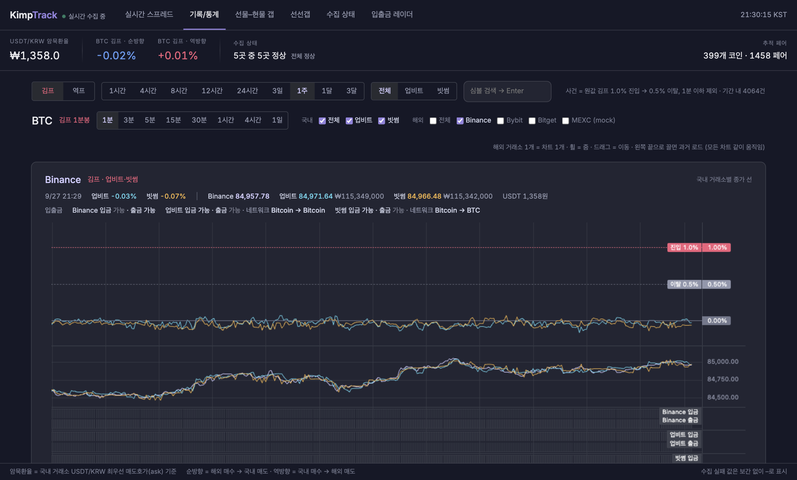

실시간 김프·역프, 실제로 옮길 수 있는지까지
KimpTrack(김프트랙)은 업비트·빗썸·바이낸스·바이비트·비트겟·OKX 여섯 거래소, 약 400개 코인의 가격 차이와 입출금 상태를 매초 들여다봅니다. 김프가 벌어진 코인을 찾는 데서 끝나지 않고, 지금 그 경로로 코인을 옮길 수 있는지, $1,000어치를 실제로 사고팔면 몇 %가 남는지까지 한 화면에 보여 줍니다. 가입 없이 무료입니다.
지금 가장 큰 경로
약 1,500개 경로 가운데 출금과 입금이 모두 열린 곳만 골라, 김프·역프가 가장 큰 경로를 이 자리에 보여 줍니다.
김프 히스토리로 분석하세요
김프는 늘 같은 코인, 같은 경로에서 되풀이해 벌어집니다. KimpTrack은 1% 넘게 벌어진 순간을 전부 사건으로 남기고, 그때 입출금이 열려 있었는지까지 같이 기록합니다. 지난 기록을 보면 어디서 기회가 자주 오는지, 그때 실제로 옮길 수 있었는지가 보입니다.
지난 7일 김프·역프 사건
맨 위 호가로 1% 이상 벌어져 1분 넘게 이어진 구간을 사건으로 남깁니다. 입출금이 막혔던 경로도 함께 남깁니다.
최근에 끝난 사건
| 코인 | 경로 | 방향 | 최고 | 지속 | 끝난 시각 |
|---|

김프(김치프리미엄)와 역프란
- 김프(김치프리미엄)
- 같은 코인이 국내 거래소에서 해외 거래소보다 비싸게 거래되는 정도입니다. 국내 원화 가격이 해외 가격을 원화로 바꾼 값보다 몇 % 높은지로 나타냅니다.
- 역프(역프리미엄)
- 반대로 국내 가격이 해외보다 싼 상태입니다. KimpTrack은 두 방향을 따로 계산해, 역프도 국내에서 사서 해외에서 팔 때 얼마나 벌어지는지를 양수로 보여 줍니다.
- 계산식
-
김프(%) = (국내 원화 가격 ÷ (해외 USDT 가격 × USDT 원화 가격) − 1) × 100
역프(%) = (해외 USDT 가격 × USDT 원화 가격 ÷ 국내 원화 가격 − 1) × 100
예를 들어 국내에서 10,500원인 코인이 해외에서 7.00 USDT이고 USDT가 1,450원이면, 해외 가격은 10,150원이라 김프는 약 3.45%입니다.
- USDT(테더) 환산
- 해외 거래소 가격은 USDT 단위라 원화로 바꿔야 비교할 수 있습니다. KimpTrack은 은행 환율 대신 업비트·빗썸의 USDT 원화 호가를 씁니다. 돈이 실제로 원화 → USDT → 해외 거래소 순서로 움직이기 때문이고, 그래서 테더 김프도 값에 들어갑니다.
- 테더 김프
- USDT(테더) 자체의 김프입니다. 국내 거래소의 USDT 원화 가격이 달러 환율보다 몇 % 높은지를 뜻하며, 비트코인 김프나 알트코인 김프와 따로 움직입니다. KimpTrack은 은행 환율 대신 이 USDT 원화 호가로 계산하므로, 코인 김프가 은행 환율로 계산한 값보다 테더 김프만큼 작게(테더 역프면 크게) 나옵니다.
- 김프 차익거래(아비트라지)와 따리
- 해외 거래소에서 코인을 사서 국내 거래소로 옮겨 파는 식으로 두 거래소의 가격 차이를 노리는 거래를 차익거래(아비트라지)라고 합니다. 코인을 들고 거래소 사이를 오간다고 해서 '따리(보따리)'라고도 부르고, 해외에서 미리 사 둔 코인을 국내 상장 때 파는 상장 따리도 같은 원리입니다. 표시된 김프에는 수수료와 전송 시간이 빠져 있어, 그만큼 남는다는 뜻은 아닙니다.
- 사건
- 맨 위 호가로 본 김프나 역프가 1% 이상 벌어져 1분 넘게 이어진 구간입니다. 0.5% 이하로 내려오면 끝난 것으로 봅니다.
KimpTrack이 김프를 계산하는 방법
수집
업비트·빗썸과 해외 거래소 4곳의 호가를 실시간으로 받습니다. 입출금이 열려 있는지도 수시로 확인합니다.
계산
매초 모든 코인의 김프·역프를 다시 계산합니다. 맨 위 호가 하나가 아니라 실제로 사고팔 때의 단가를 씁니다.
기록
맨 위 호가로 계산한 값은 빠짐없이 저장합니다. 크게 벌어졌던 구간은 따로 모아 두어 나중에 다시 볼 수 있습니다.
전달
실시간 김프 표에는 바뀐 값만 골라 곧바로 보냅니다.
반영하지 않는 것
거래 수수료와 출금 수수료, 코인을 보내는 데 걸리는 시간과 그동안의 가격 변화, 출금 한도나 트래블룰 같은 거래소 정책은 계산에 넣지 않습니다. 실제로 옮기기 전에는 거래소에서 직접 확인해 주세요.
자주 묻는 질문
김프 사이트마다 숫자가 다른 이유는 무엇인가요?
계산에 쓰는 가격과 환율이 다르기 때문입니다. 대개는 가격 하나와 은행 환율로 계산하지만, KimpTrack은 $1,000어치를 호가창에 체결한 평균 단가와 국내 거래소의 USDT 호가를 씁니다. 호가가 얇은 코인일수록 값이 작게 나옵니다.
왜 $1,000 기준인가요?
모든 코인의 호가창 두께를 같은 기준으로 비교하려는 것입니다. 금액이 클수록 단가가 더 밀리므로, 더 큰 금액을 옮긴다면 김프가 이보다 작아질 수 있습니다.
환율은 무엇을 쓰나요?
은행 환율이 아니라 업비트·빗썸이 각자 가진 USDT(테더) 원화 호가를 씁니다. 은행 환율 대신 이 호가를 쓰기 때문에 테더 김프가 값에 들어갑니다. 김프는 USDT를 사는 쪽이라 매도호가를, 역프는 USDT를 파는 쪽이라 매수호가를 씁니다.
옮길 수 없는 경로는 어떻게 판단하나요?
보내는 거래소의 출금과 받는 거래소의 입금을 같은 네트워크 기준으로 확인합니다. 한쪽이라도 막혔거나, 상태를 확인하지 못했거나, 두 거래소가 같은 네트워크를 지원하지 않으면 옮길 수 없는 경로로 봅니다.
수수료와 전송 시간도 반영하나요?
아니요. 거래·출금 수수료와 전송 시간, 그 사이의 가격 변화는 빠져 있습니다. 표시된 김프만큼 수익이 난다는 뜻이 아닙니다.
얼마나 자주 갱신되나요?
모든 경로를 매초 다시 계산합니다. 이 페이지의 카드는 화면을 보고 있는 동안 10초마다 새 값을 받고, 실시간 김프 표는 바뀐 값을 곧바로 받습니다.
가입이나 비용이 필요한가요?
아니요. 로그인이나 앱 설치 없이 웹에서 무료로 볼 수 있습니다. 실시간 김프 표는 PC 화면에 맞춰 만들었습니다.
매수·매도 신호를 주나요?
아니요. 거래소 사이의 가격 차이와 입출금 상태를 보여 줄 뿐, 언제 사고팔지 권하지 않습니다.
역김프와 역프는 같은 말인가요?
네. 국내 가격이 해외보다 싼 상태를 역프, 역김프, 역프리미엄이라고 부릅니다. KimpTrack은 역프를 국내에서 사서 해외에서 팔 때 기준으로 따로 계산해 양수로 보여 줍니다.